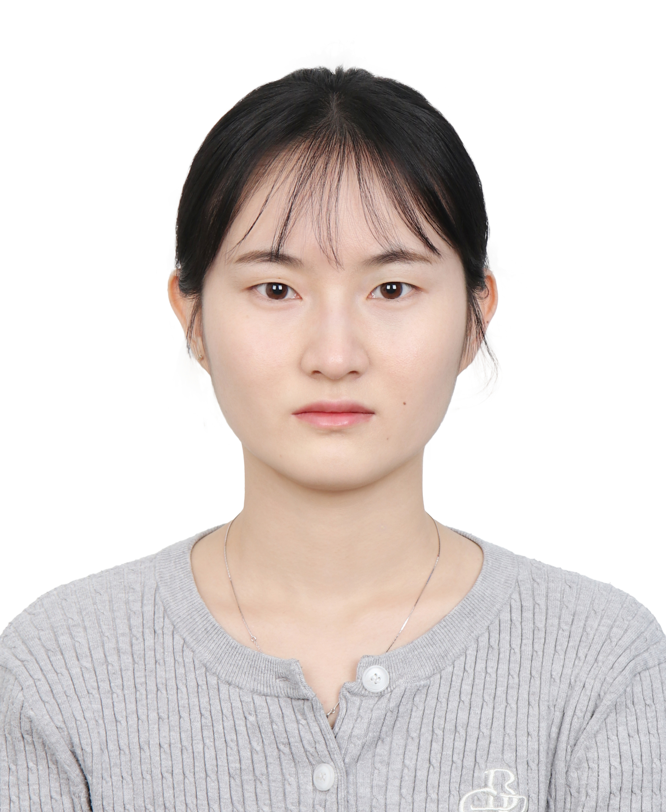
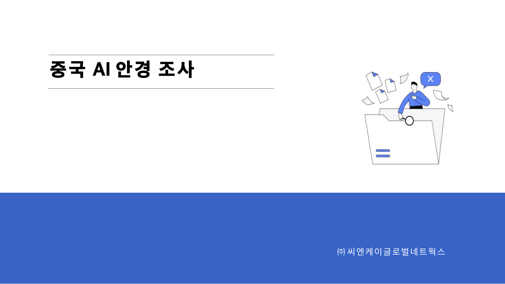
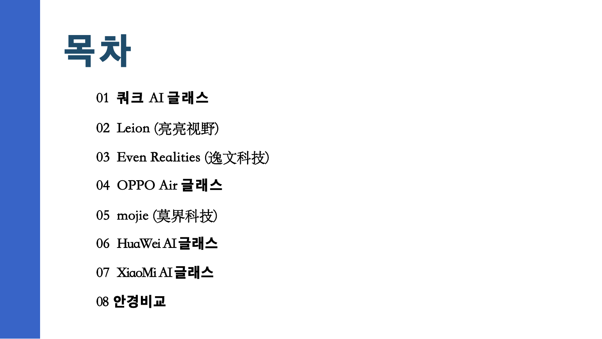
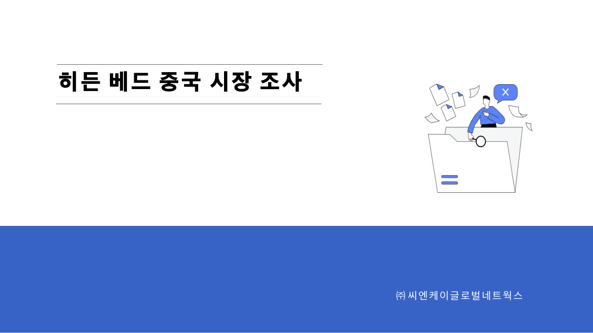
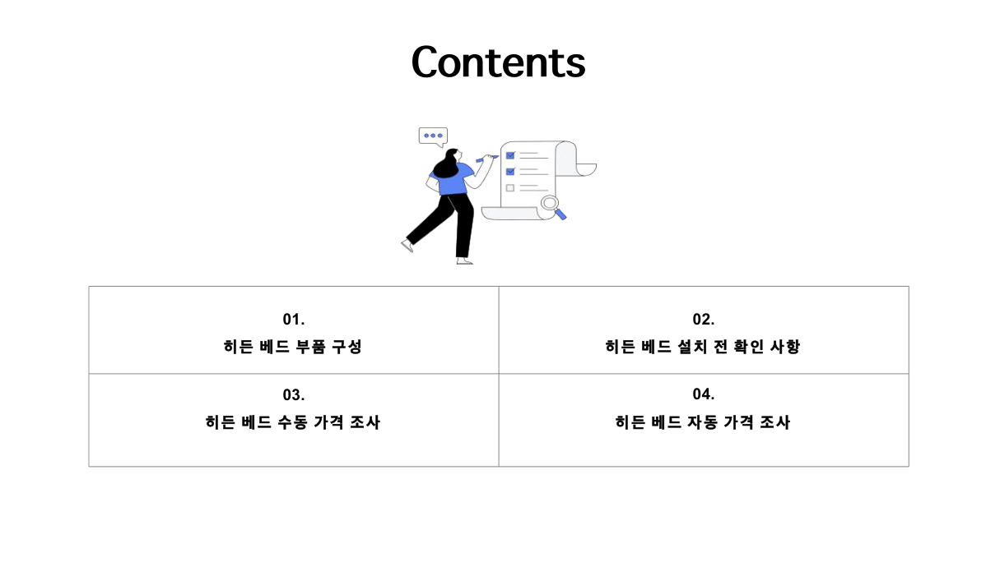
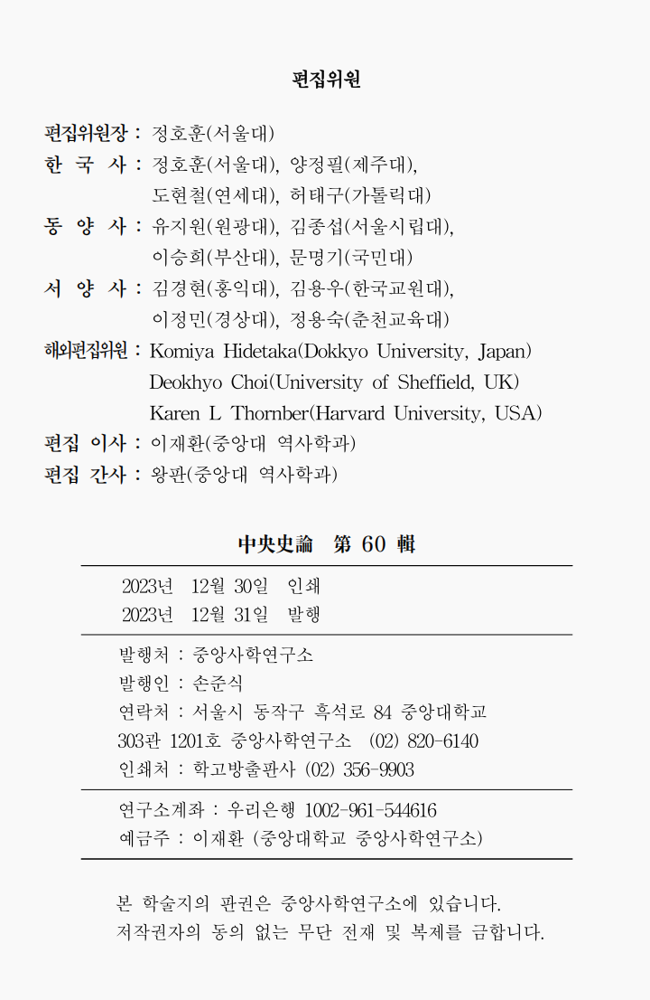
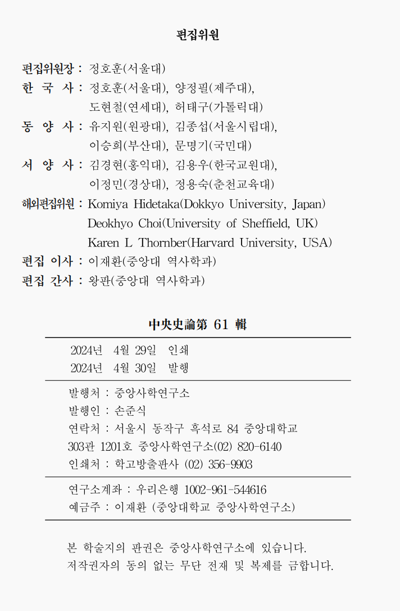
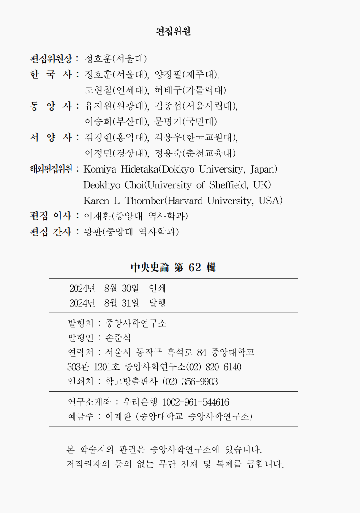
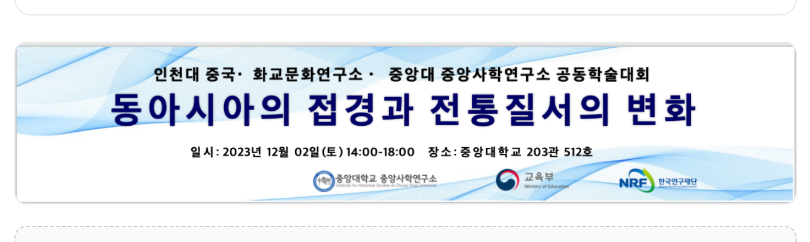

MARKETING · CONTENT · RESEARCH
WANG FAN
PORTFOLIO
한국·중국 시장을 연결하며, 조사한 정보를 실제 업무 자료와 콘텐츠로 정리해 온 실무형 인재입니다.

01 / EDUCATION
학력
한국어와 동양사 연구를 통해 자료 분석과 체계적인 문서 정리 역량을 쌓았습니다.
2022.09 — 2026.02
중앙대학교 · 역사학과(동양사) 석사
GPA 3.9 / 4.5
2018.09 — 2022.06
흑룡강외국어대학교 · 한국어학과 학사
GPA 3.87 / 4.5
02 / EXPERIENCE
경력
마케팅·소싱 업무와 연구소 운영 경험을 통해 조사 → 문서화 → 운영까지 폭넓게 경험했습니다.
2026.05 — 2026.06
씨엔케이글로벌네트웍 · 마케터 인턴
ODM/OEM 공장 발굴 · 한국/중국 시장 조사 · 상품 가격 조사 및 데이터 정리 · 인쇄기 부품 구매 · 중국 법인 변경 관련 문서 및 커뮤니케이션
2023.09 — 2024.08
중앙사학연구소 · 연구조교
연구소 행정·회계 · 사이트 공지 및 간행물 업로드 · 『중앙사론』 투고/심사/발행 지원 · 학술회 준비 및 현장 운영
03 / SKILLS
개인 스킬
한국어·중국어 기반의 커뮤니케이션과 문서/콘텐츠 제작 역량을 실무에 연결합니다.
Language
중국어 원어민
한국어 TOPIK 6급
Office & Content
PPT · Excel · Word · HWP
Premiere Pro · CapCut
Research
한국·중국 시장 조사
상품 비교 · 가격 조사 · 공급처 조사
Operation
웹사이트 공지 · 간행물 업로드
논문 투고/심사/발행 · 학술행사 운영
04 / SELECTED WORKS
포트폴리오
실제 업무에서 작성한 보고서와 운영 결과물을 중심으로 구성했습니다. 특히 무역회사 인턴 기간의 시장조사 보고서를 주요 작업물로 배치했습니다.
PROJECT 01
중국 AI 안경 조사
씨엔케이글로벌네트웍 · 시장조사 보고서
30 pages


중국 AI 안경 시장 및 주요 브랜드를 조사하고 비교 자료로 정리한 실제 보고서입니다.
📄 보고서 전체보기
새 창에서 중국 AI 안경 조사 보고서 열기 ↗
새 창에서 중국 AI 안경 조사 보고서 열기 ↗
PROJECT 02
히든 베드 중국 시장 조사
씨엔케이글로벌네트웍 · 시장/가격 조사 보고서
22 pages


제품 구조, 설치 전 확인사항, 수동·자동 가격 조사 등 업무 목적에 맞춰 자료를 구조화했습니다.
📄 보고서 전체보기
새 창에서 히든 베드 중국 시장 조사 보고서 열기 ↗
새 창에서 히든 베드 중국 시장 조사 보고서 열기 ↗
PROJECT 03
1인 가구 가구류 조사
씨엔케이글로벌네트웍 · 상품/공급처 조사
실제 조사표
중국 공급처와 한국 판매 제품을 함께 비교하며 업체, 가격, 소재, 링크, 비고 등을 표 형태로 정리했습니다.
보고서 미리보기
PROJECT 05
『중앙사론』 발행 & 학술회 운영
논문 모집 → 심사 진행 → 발행 · 학술회 준비/현장 운영
Publication
근무 기간 발행: 『중앙사론』 제60·61·62집
모집 공고 · 투고 시스템 · 심사 연락 · 결과 고지 · 인쇄/제본/발송



Event
다과 구매 · 장소 준비 · 현수막 제작 · 발표논문 제본 · 만찬 예약

학술회 현수막 제작 결과
공식 사이트
『중앙사론』 홈페이지 ↗
『중앙사론』 홈페이지 ↗
VIDEO PORTFOLIO
한국어 학습 콘텐츠
영상 제작: 자막 번역